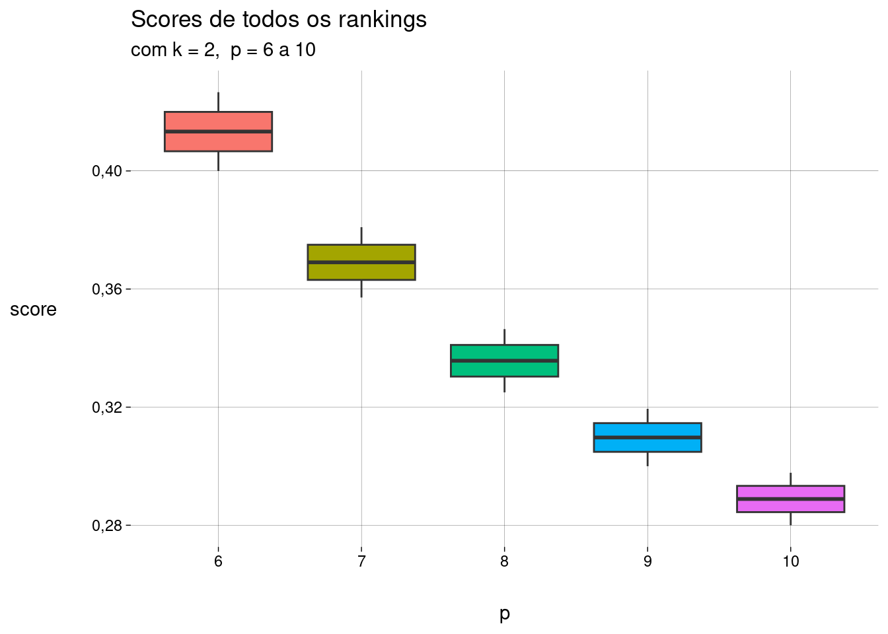
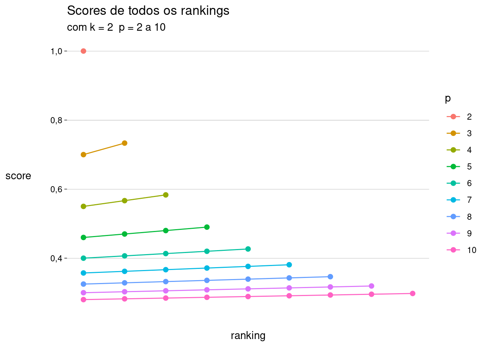

r <- rk('xxx-x')
s(r)[1] 0,84Imagine que a lista de \(k\) elementos foi definida por uma autoridade, usando critérios que não conhecemos.
Em uma tentativa de descobrir esses critérios, construímos um modelo para avaliar todos os elementos da população (que incluem os \(k\) elementos da lista).
Nosso modelo produz um ranking de todos os elementos. Para facilitar, vamos supor que não há empates no ranking.
Uma pergunta natural sobre a qualidade do ranking produzido é
Quantas posições do ranking são necessárias para incluir todos os \(k\) elementos da lista?
A resposta é \(p\), a posição, no ranking, do elemento da lista com pior classificação.
Aliás, é por isso que convencionamos, no capítulo anterior, que nossos rankings sempre terminam com um elemento da lista.
Um exemplo:
A lista contém \(k = 5\) elementos.
O ranking \(r_1\) é xx-x-xx, com \(p = 7\).
O ranking \(r_2\) é -xxxxx, com \(p = 6\).
Segundo a medida proposta aqui, \(r_2\) é melhor que \(r_1\).
Ou seja, quanto menor o valor de \(p\), melhor o ranking.
Embora comparar rankings através de seus valores de \(p\) seja simples, podemos examinar medidas alternativas, que sejam mais finas que esta.
Por exemplo, é discutível se os dois rankings xx---x e ---xxx devem ser considerados igualmente bons; no entanto, ambos têm \(p = 6\).
-
Dado um ranking \(r\) com \(k\) e \(p\), queremos definir uma função \(s(r)\) — \(s\) de score — com as seguintes características:
Se \(r\) não contiver “-”, então \(s(r) = 1\). Neste caso, \(r\) é um ranking perfeito, que coincide com a lista (por exempĺo, xxxxx). Em casos assim, \(k = p\). Vamos definir \(s\) como sendo da forma
\[ s(r) = \frac k p + \cdots \]
onde as reticências representam uma parcela que ainda vamos definir. Se \(r\) for um ranking perfeito, a parcela \(k/p\) será \(1\), e vamos definir a parcela restante para que seja igual a zero.
A parcela restante deve ter valor maior quanto melhor for o ranking. Quanto mais próximos do fim do ranking estiverem os caracteres “-”, melhor ele será. Uma quantidade natural seria
\[ \frac{\operatorname{soma\_}}{\sum_{i = 1, p}i} \quad=\quad \frac{\operatorname{soma\_}}{p(p + 1) / 2} \quad=\quad \frac{2\operatorname{soma\_}}{p(p + 1)} \]
onde \(\operatorname{soma\_}\) é a soma das posições ocupadas por “_” em \(r\).
Como queríamos, quando \(r\) for um ranking perfeito, \(\operatorname{soma\_} = 0\), e então \(s(r) = 1\).
Mas também queremos que somente rankings perfeitos tenham \(s(r) = 1\). Para isso, considere que um ranking mais próximo do perfeito é da forma
x...x-x
Ou seja, \(k = p - 1\) e \(\operatorname{soma\_} = p - 1\).
Vamos multiplicar a segunda parcela por \(\alpha\) de forma que \(s(r) < 1\) para este ranking quase perfeito:
\[ s(r) = \frac{p-1}{p} + \frac{2(p-1)}{p(p+1)} \cdot \alpha \]
Então
\[ \begin{aligned} s(r) < 1 &\iff \frac{2(p-1)}{p(p+1)} \cdot \alpha < \frac1p \\ &\iff 2 \alpha (p - 1) < p + 1 \\ &\iff \alpha < \frac12 \cdot \frac{p + 1}{p - 1} \\ &\iff \alpha = \frac1m \cdot \frac{p + 1}{p - 1} & (m > 2) \end{aligned} \]
o que dá
\[ \begin{aligned} s(r) &= \frac{k}{p} + \frac{2\operatorname{soma\_}}{p(p+1)} \cdot \alpha \\ &= \frac{k}{p} + \frac{2\operatorname{soma\_}}{p(p+1)} \cdot \frac1m \cdot \frac{p + 1}{p - 1} & (m > 2) \\ &= \frac{k}{p} + \frac{2\operatorname{soma\_}}{p(p-1)} \cdot \frac1m & (m > 2) \\ &= \frac{k}{p} + \frac{\operatorname{soma\_}}{p(p-1)} \cdot \frac2m & (m > 2) \end{aligned} \]
Dependendo do valor de \(m > 2\) escolhido, teremos medidas diferentes.
A função que implementamos usa o default de \(m = 10\), mas valores diferentes podem ser passados.
r <- rk('xxx-x')
s(r)[1] 0,84Para \(p = 8\), alguns exemplos:
s(
list(
rk('xxxxxxxx'),
rk('xxxxxx-x'),
rk('-xxxxxxx')
)
)[1] 1,0000000 0,9000000 0,8785714Eis todos os rankings de comprimento \(8\), com suas pontuações:
| ranking_str | s |
|---|---|
| xxxxxxxx | 1,0000000 |
| xxxxxx-x | 0,9000000 |
| xxxxx-xx | 0,8964286 |
| xxxx-xxx | 0,8928571 |
| xxx-xxxx | 0,8892857 |
| xx-xxxxx | 0,8857143 |
| x-xxxxxx | 0,8821429 |
| -xxxxxxx | 0,8785714 |
| xxxxx--x | 0,7964286 |
| xxxx-x-x | 0,7928571 |
| xxxx--xx | 0,7892857 |
| xxx-xx-x | 0,7892857 |
| xxx-x-xx | 0,7857143 |
| xx-xxx-x | 0,7857143 |
| xxx--xxx | 0,7821429 |
| xx-xx-xx | 0,7821429 |
| x-xxxx-x | 0,7821429 |
| xx-x-xxx | 0,7785714 |
| x-xxx-xx | 0,7785714 |
| -xxxxx-x | 0,7785714 |
| xx--xxxx | 0,7750000 |
| x-xx-xxx | 0,7750000 |
| -xxxx-xx | 0,7750000 |
| x-x-xxxx | 0,7714286 |
| -xxx-xxx | 0,7714286 |
| x--xxxxx | 0,7678571 |
| -xx-xxxx | 0,7678571 |
| -x-xxxxx | 0,7642857 |
| --xxxxxx | 0,7607143 |
| xxxx---x | 0,6892857 |
| xxx-x--x | 0,6857143 |
| xxx--x-x | 0,6821429 |
| xx-xx--x | 0,6821429 |
| xxx---xx | 0,6785714 |
| xx-x-x-x | 0,6785714 |
| x-xxx--x | 0,6785714 |
| xx-x--xx | 0,6750000 |
| xx--xx-x | 0,6750000 |
| x-xx-x-x | 0,6750000 |
| -xxxx--x | 0,6750000 |
| xx--x-xx | 0,6714286 |
| x-xx--xx | 0,6714286 |
| x-x-xx-x | 0,6714286 |
| -xxx-x-x | 0,6714286 |
| xx---xxx | 0,6678571 |
| x-x-x-xx | 0,6678571 |
| x--xxx-x | 0,6678571 |
| -xxx--xx | 0,6678571 |
| -xx-xx-x | 0,6678571 |
| x-x--xxx | 0,6642857 |
| x--xx-xx | 0,6642857 |
| -xx-x-xx | 0,6642857 |
| -x-xxx-x | 0,6642857 |
| x--x-xxx | 0,6607143 |
| -xx--xxx | 0,6607143 |
| -x-xx-xx | 0,6607143 |
| --xxxx-x | 0,6607143 |
| x---xxxx | 0,6571429 |
| -x-x-xxx | 0,6571429 |
| --xxx-xx | 0,6571429 |
| -x--xxxx | 0,6535714 |
| --xx-xxx | 0,6535714 |
| --x-xxxx | 0,6500000 |
| ---xxxxx | 0,6464286 |
| xxx----x | 0,5785714 |
| xx-x---x | 0,5750000 |
| xx--x--x | 0,5714286 |
| x-xx---x | 0,5714286 |
| xx---x-x | 0,5678571 |
| x-x-x--x | 0,5678571 |
| -xxx---x | 0,5678571 |
| xx----xx | 0,5642857 |
| x-x--x-x | 0,5642857 |
| x--xx--x | 0,5642857 |
| -xx-x--x | 0,5642857 |
| x-x---xx | 0,5607143 |
| x--x-x-x | 0,5607143 |
| -xx--x-x | 0,5607143 |
| -x-xx--x | 0,5607143 |
| x--x--xx | 0,5571429 |
| x---xx-x | 0,5571429 |
| -xx---xx | 0,5571429 |
| -x-x-x-x | 0,5571429 |
| --xxx--x | 0,5571429 |
| x---x-xx | 0,5535714 |
| -x-x--xx | 0,5535714 |
| -x--xx-x | 0,5535714 |
| --xx-x-x | 0,5535714 |
| x----xxx | 0,5500000 |
| -x--x-xx | 0,5500000 |
| --xx--xx | 0,5500000 |
| --x-xx-x | 0,5500000 |
| -x---xxx | 0,5464286 |
| --x-x-xx | 0,5464286 |
| ---xxx-x | 0,5464286 |
| --x--xxx | 0,5428571 |
| ---xx-xx | 0,5428571 |
| ---x-xxx | 0,5392857 |
| ----xxxx | 0,5357143 |
| xx-----x | 0,4642857 |
| x-x----x | 0,4607143 |
| x--x---x | 0,4571429 |
| -xx----x | 0,4571429 |
| x---x--x | 0,4535714 |
| -x-x---x | 0,4535714 |
| x----x-x | 0,4500000 |
| -x--x--x | 0,4500000 |
| --xx---x | 0,4500000 |
| x-----xx | 0,4464286 |
| -x---x-x | 0,4464286 |
| --x-x--x | 0,4464286 |
| -x----xx | 0,4428571 |
| --x--x-x | 0,4428571 |
| ---xx--x | 0,4428571 |
| --x---xx | 0,4392857 |
| ---x-x-x | 0,4392857 |
| ---x--xx | 0,4357143 |
| ----xx-x | 0,4357143 |
| ----x-xx | 0,4321429 |
| -----xxx | 0,4285714 |
| x------x | 0,3464286 |
| -x-----x | 0,3428571 |
| --x----x | 0,3392857 |
| ---x---x | 0,3357143 |
| ----x--x | 0,3321429 |
| -----x-x | 0,3285714 |
| ------xx | 0,3250000 |
| -------x | 0,2250000 |
Perceba que pode haver empates: xxxx--xx e xxx-xx-x têm o mesmo valor de \(s\). É razoável achar que estes dois rankings têm a mesma qualidade.
Como a lista é dada e fixa, só faz sentido, na prática, comparar rankings com o mesmo valor de \(k\).
Vamos examinar, para uma lista com \(k = 2\), os rankings possíveis com \(p\) variando de \(2\) a \(10\).
São \(45\) rankings:
| ranking_str | p | s |
|---|---|---|
| xx | 2 | 1,0000000 |
| x-x | 3 | 0,7333333 |
| -xx | 3 | 0,7000000 |
| x--x | 4 | 0,5833333 |
| -x-x | 4 | 0,5666667 |
| --xx | 4 | 0,5500000 |
| x---x | 5 | 0,4900000 |
| -x--x | 5 | 0,4800000 |
| --x-x | 5 | 0,4700000 |
| ---xx | 5 | 0,4600000 |
| x----x | 6 | 0,4266667 |
| -x---x | 6 | 0,4200000 |
| --x--x | 6 | 0,4133333 |
| ---x-x | 6 | 0,4066667 |
| ----xx | 6 | 0,4000000 |
| x-----x | 7 | 0,3809524 |
| -x----x | 7 | 0,3761905 |
| --x---x | 7 | 0,3714286 |
| ---x--x | 7 | 0,3666667 |
| ----x-x | 7 | 0,3619048 |
| -----xx | 7 | 0,3571429 |
| x------x | 8 | 0,3464286 |
| -x-----x | 8 | 0,3428571 |
| --x----x | 8 | 0,3392857 |
| ---x---x | 8 | 0,3357143 |
| ----x--x | 8 | 0,3321429 |
| -----x-x | 8 | 0,3285714 |
| ------xx | 8 | 0,3250000 |
| x-------x | 9 | 0,3194444 |
| -x------x | 9 | 0,3166667 |
| --x-----x | 9 | 0,3138889 |
| ---x----x | 9 | 0,3111111 |
| ----x---x | 9 | 0,3083333 |
| -----x--x | 9 | 0,3055556 |
| ------x-x | 9 | 0,3027778 |
| -------xx | 9 | 0,3000000 |
| x--------x | 10 | 0,2977778 |
| -x-------x | 10 | 0,2955556 |
| --x------x | 10 | 0,2933333 |
| ---x-----x | 10 | 0,2911111 |
| ----x----x | 10 | 0,2888889 |
| -----x---x | 10 | 0,2866667 |
| ------x--x | 10 | 0,2844444 |
| -------x-x | 10 | 0,2822222 |
| --------xx | 10 | 0,2800000 |
Os gráficos abaixo mostram os scores atribuídos para todos os rankings com \(k = 2\) e \(p\) variando de \(2\) a \(10\), separados por valores de \(p\):

